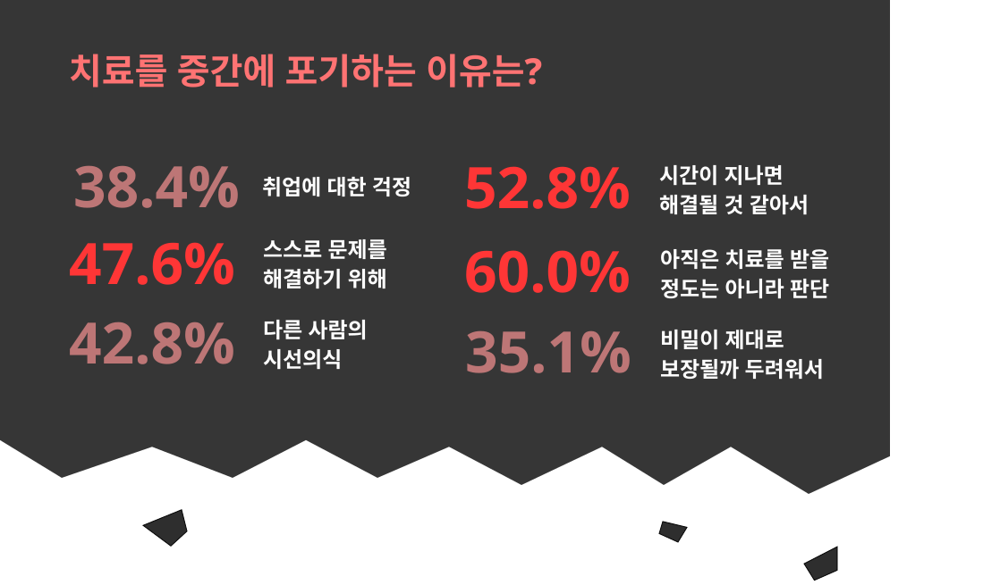

대한민국 내 정신건강,
그 오해와 실태에 대하여
전국민 중 상당한 비중에 해당하는 사람들이 지금도 정신질환을 달고 살고 있음을 알 수 있으며, 이들 중 상당수는 정신질환을 방치하고 있다.
사람들의 편견과 오해 속에서 정신질환을 가진 사람들이 제때 제대로 치료를 받지 못하는 상황이 벌어지고, 이는 자살이나 자해 등의 환자 스스로를 향한 극단적인 선택으로 이어질 위험이 있음을 알 수 있다.
미디어와 매스컴에서 보여졌던 정신질환에 대한 편견적인 모습으로 인해 지금도 많은 사람들이
정신질환에
대한 편견과 오해를 가지고, 정신질환을 가진 사람들에 대한 부정적인 인식이 많다.
그러나 실제 정신질환과
관련된 수치와 통계는 대중의 인식과는 다름을 보여주고 있다.
대한민국 정신건강 증진을 위해서는 이제
정신질환을 편견 아닌 격려로 바라봐야 하지 않을까.
이젠,
오해와 편견
이 아닌
희망과 격려로 바라볼 때
전체 범죄 사건의 범죄자 가운데 정신질환자가 원인인 경우는 1%조차 되지 않는 매우 극소수인 것으로
나타났으며 대부분의 범죄
사건은 정신질환과 관련 없는 경우가 많다. 그럼에도 대중의 인식은 26.04%가
정신질환에 의한 범죄라고 인식하는데 이는 실제
수치보다 무려 60배 정도 높게 인식하고 있는 것이다.
출처: 공식 통계와 비교해 본 정신질환 범죄자에 대한 인식 (2016)
출처:kosis(정신장애 일년유병률 성과 연령의 보정, 2016)


현재 국내에서는 수많은 사람들이 정신질환을 가지고 살아가며 고통받고 있다. 그러나 사회속에서
만연한 정신질환에
대한 편견과 오해가 존재하며, 이것은 정신질환을 가진 환자의 치료를 주저하는 원인이
되고 있다. 따라서 실제 수치와
통계로 본 정신질환에 대한 팩트와 실태를 정리하였다.